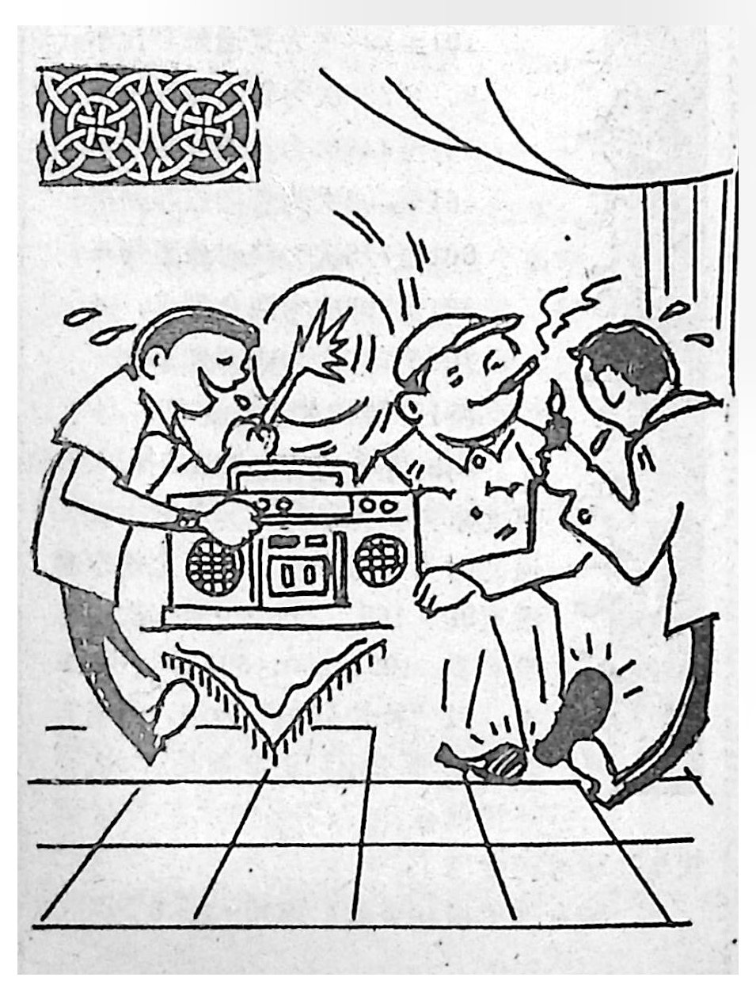

佚名 《人事》1990年第5期（总第56期），第40页
失算（插图）
A Miscalculation (illustration)
- Passage illustrated
严主任还是摇头，而且越摇越快。突然，他大叹一声：“咳！昨晚睡觉落枕，脖子真不好受，幸亏现在能转动自如了。刘厂长，接着说！”
Director Yan kept shaking his head, faster and faster. Suddenly he sighed loudly: “Ah! I slept on my neck wrong last night, it's been really stiff — luckily it turns freely now. Director Liu, go on!”From the very short story 失算 (“A Miscalculation”) by Zhang Bangning, on the same page. 张邦宁《失算》（小小说），同页
- Description
- Illustration for the story: men crowd round a cassette player — one sweating as he fiddles with it, one in a cap grinning with a cigarette, another holding up a lighter — while a fourth throws up his hands.
- Note
- In the story Liu Fei rises from clerk to factory director by reading his superiors' faces: he grabs the asbestos suit to look heroic when the director walks in, and gives the director his prized potted plant. Briefing a new superior on candidates, he reverses his opinion each time the man shakes his head — until the superior explains he has a stiff neck.
- Artist
- Unattributed 佚名
- Published in
- 《人事》1990年第5期（总第56期）, p. 40
- Themes
- Connections (guanxi) · Promotion · Story illustrations

Cite
Unattributed, “失算（插图）” [A Miscalculation (illustration)], Renshi (Personnel) 《人事》, 1990, no. 5, p. 40.